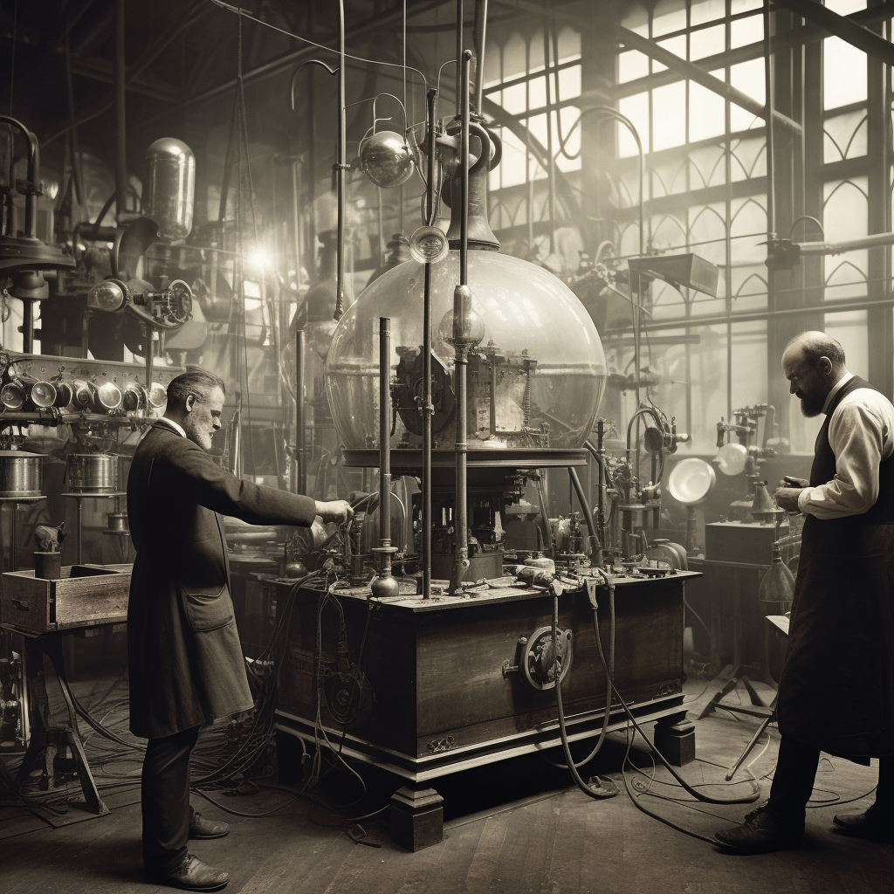
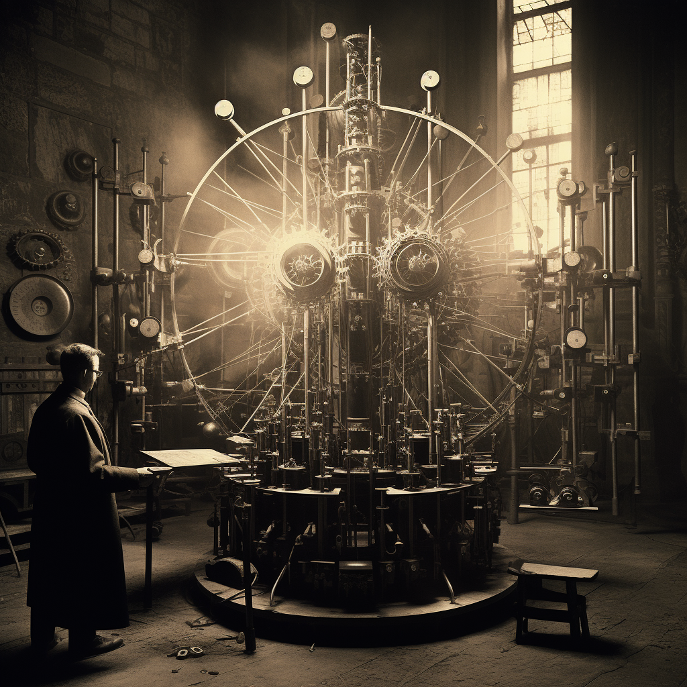
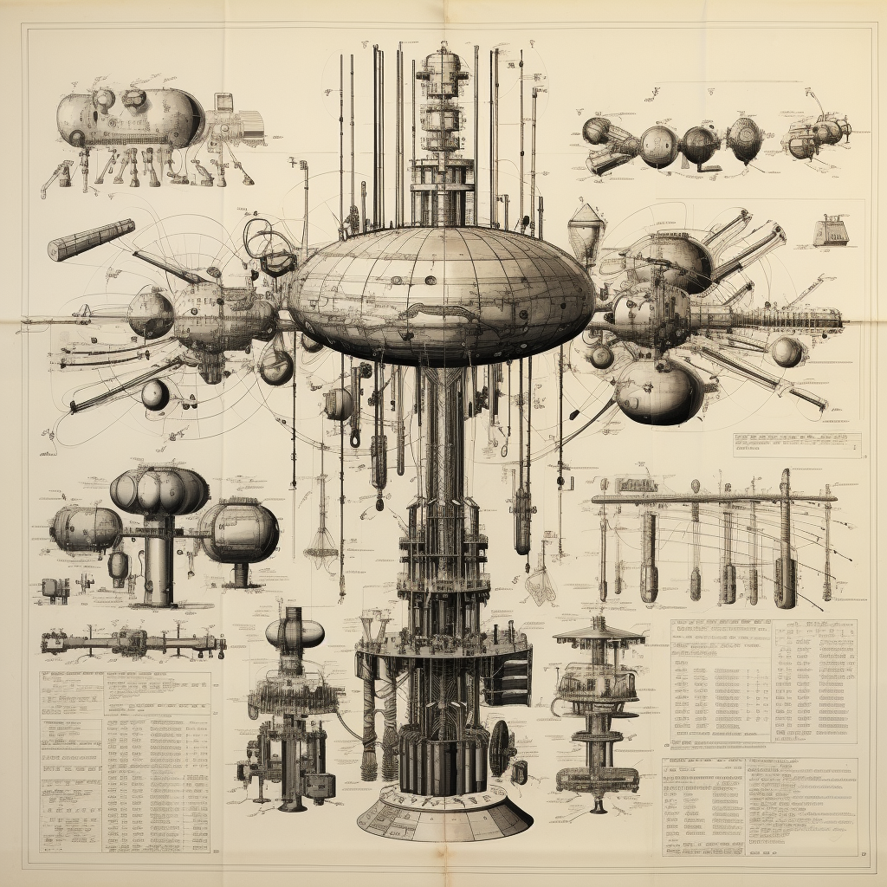

À cette fin, la FNDP manipule et arme Abel Kane, fils cadet d’une famille d’aristocrates, qui tuera l’Archiduc François-Ferdinand et son épouse en 1914 (attentat de Sarajevo). Abel se fait arrêter mais s’échappe pour rejoindre sa famille. Se sentant déshonoré par l’acte d’Abel, son père le provoquera en duel. Abel échappe de peu à la mort mais en gardera une cicatrice à vie. Il doit s’en aller.

Devenu paria, Abel nourrit sa rancœur contre la FNDP et son frère. Se sentant abandonné de tous, c’est désormais par le chaos qu’Abel rêve sa vengeance.
Émigré à Chicago dans une Amérique en pleine prohibition, il se lance dans le commerce d’alcool de contrebande. Tandis qu’il amasse une fortune colossale, il observe de nombreux riches industriels tomber en banqueroute lors du Krach boursier de 1931.
Abel y voit une opportunité de prendre sa revanche : les membres de la FNDP s’appauvrissant, il s’impose comme seule alternative au refinancement et prend donc la tête de la Fondation. Une position qui lui donnera les moyens d’accomplir son rêve de chaos.
Sachant que la prohibition ne durera pas éternellement, Abel redirige habilement les activités de la Fondation vers un nouveau domaine qui, il en est certain, lui permettra de trouver le moyen d’instaurer le chaos : la recherche scientifique.

Durant la seconde guerre mondiale, le monde fait face à un grand danger venant d’Allemagne : les scientifiques allemands planchent sur le développement d’une bombe atomique. Apeuré par la perspective que le nazisme ne gangrène l’Europe, Conquest, par le truchement d’un certain Albert Einstein attire l’attention du Gouvernement américain sur les avancées réalisées par les Allemands. C’est ainsi que, en collaboration avec le gouvernement américain, Conquest participera au développement de l’arme nucléaire. Une avancée regrettable, mais nécessaire.
En effet, une fois le conflit terminé et la guerre froide enclenchée, l’URSS cherchera à rattraper son retard sur les États-Unis quant à son arsenal nucléaire.


Passant par Abel Kane pour obtenir les plans, ce dernier s’y refuse : il ne ferait pas bon vivre dans un monde où deux superpuissances sont dotées de l’arme nucléaire. Cela dit, Nikita Kroutchev, cherchant la reconnaissance de Staline, saura se montrer persuasif.
À contre cœur, et à l’insu de la FNDP, Abel va donc chercher à obtenir les plans de la bombe H. Mais après que la FNDP ait découvert le pot aux roses, Abel est en mauvaise posture : il ne lui reste que peu de temps pour mettre de l’ordre dans ses affaires avant de s’abandonner à son sort..